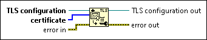

Add Trusted Certificate To TLS Configuration Function
Owning Palette: Transport Layer Security Functions
Requires: Base Development System
Adds a Certificate Authority (CA) certificate to a Transport Layer Security (TLS) configuration and marks the certificate as trusted.

 Add to the block diagram Add to the block diagram |
 Find on the palette Find on the palette |